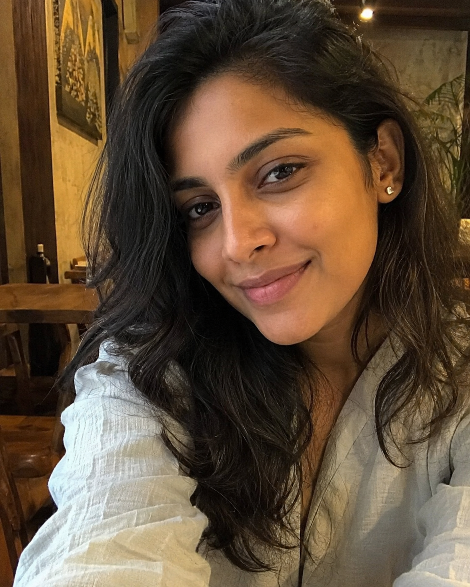
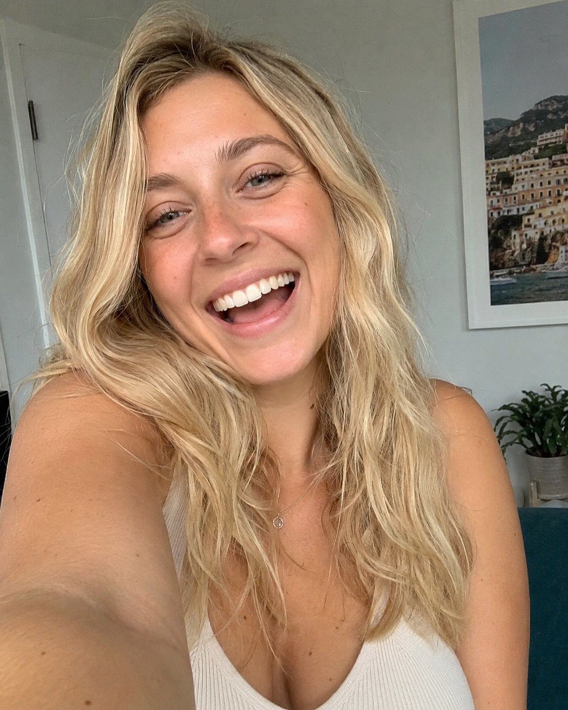

Grab a coffee. Sit down for a second — this one's a little different from what I normally post, and I've gone back and forth on whether to even share it. But a few people have asked, so here it is.
Late, with the lights off — exactly how this whole thing started.
A while back, a friend sent me a link to this "soulmate sketch" thing — half as a joke, half not. I'd seen people posting their drawings online for weeks and rolling my eyes at most of them. But that night I was sitting up later than I should've been, scrolling with the lights off, and for whatever reason — curiosity, boredom, a glass of wine — I filled out the questionnaire. It took maybe ten minutes. Some of the questions were the kind you don't usually say out loud, even to yourself — what you're actually looking for, what you're scared of, what you've stopped letting yourself hope for.
By the next morning, the sketch was sitting in my inbox.
The sketch that arrived the next morning.
I want to be honest — it wasn't some lightning-bolt, gasp-out-loud moment. It was quieter than that. A pencil drawing of a guy, maybe late twenties, dark hair a little overgrown like he hadn't gotten around to a haircut. But there was this one thing — he wasn't looking straight at the "camera." He was looking just off to the side, like something had caught his attention a second before, half a smile on his face, like he was about to laugh at something. It felt less like a portrait and more like someone had been caught mid-thought. I remember thinking, that's such a weirdly specific way to draw a stranger.
I saved it, half-believing, half not, and went on with my life. Honestly, I mostly forgot about it.
Six weeks later
I was at a friend's birthday thing — the kind of low-key gathering where you end up talking to whoever's standing near the snacks. And there was this guy, leaning against the counter, half-laughing at something someone said, looking off toward the door like he was waiting for someone else to walk in.
The gathering where I saw him — string lights, candles, way too many people in one kitchen.
The half-smile. The way he was looking just off to the side. I actually had to take a second and just... breathe.
I'm not going to pretend I didn't notice. I felt it before I could even think about it — that small, strange jolt, like déjà vu but sharper.
The part I keep coming back to
I didn't say anything about the sketch. Not that night, not since. Because the second I felt that jolt, a more honest question showed up right behind it: am I noticing this because it's actually him — or because I've spent six weeks with that drawing sitting in the back of my mind, ready to match it to literally anyone who tilted their head a certain way?
I don't know the answer. And I've decided I'm okay not knowing it yet.
Where I ended up that night, turning all of it over again.
Because a face — drawn or real — isn't actually the thing I'm looking for. What I'm looking for is someone who's kind when no one's watching. Someone whose values line up with mine when it actually counts, not just on a good day. Someone who, when I'm not in the room, is still thinking about the conversation we had — the same way I find myself thinking about his.
So that's where I am. We've talked a few times since. Nothing dramatic, nothing official. I'm not in a hurry to decide what this is, and honestly, I think that's the healthiest thing about it. The sketch didn't hand me an answer. If anything, it just made me pay attention — to a moment I might have otherwise let pass by without a second look.
I don't know how this one ends. Maybe it's nothing. Maybe it's something. I'll probably write about it again either way, because at this point you're all kind of invested too, aren't you?
Want to know how this turns out?
I honestly don't know yet either. If you'd like to hear what happens next — and a few other things I've been noticing since — drop your email below. I'll keep it casual, no spam, just updates as they happen.
No spam, ever. Unsubscribe anytime.
If you don't want to wait for the next update — and you're curious what your own sketch might show you — here's where I started:
Get My Own Sketch →If you decide to try it
For anyone wondering what that actually looks like, here's the short version of how it went for me:
Answer a few questions
A short, guided questionnaire about you and what you're looking for — takes a few minutes.
Your reading is created
Your answers are used to create a personal sketch and reading, by hand.
Your sketch is delivered
Sent digitally — no waiting weeks, no in-person visit required.
A few others who've gotten theirs
I'm not the only one who's felt something they weren't expecting. A few readers wrote back after getting their own:
"I went in rolling my eyes and came out a little spooked, honestly."

"Took five minutes and gave me a lot to think about on the drive home."
"Sent it to my sister and now she wants one too."

Here's what I keep thinking about: I'd been carrying around that drawing for six weeks without realizing it was quietly changing how I was looking at the world — who I noticed, who I gave a second glance to, what I was actually hoping for when I walked into a room.
If you're curious what yours might show you — or more honestly, what it might make you start noticing — that's the part I'd actually encourage you to find out for yourself.